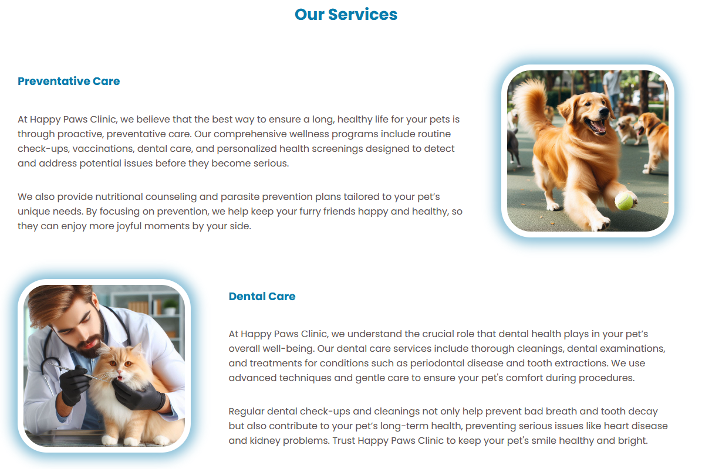
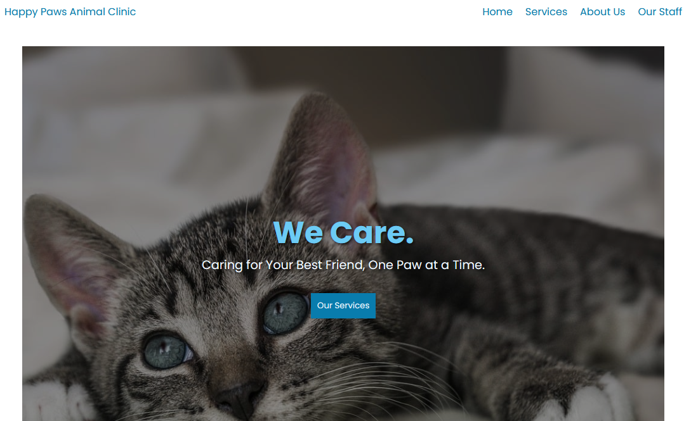
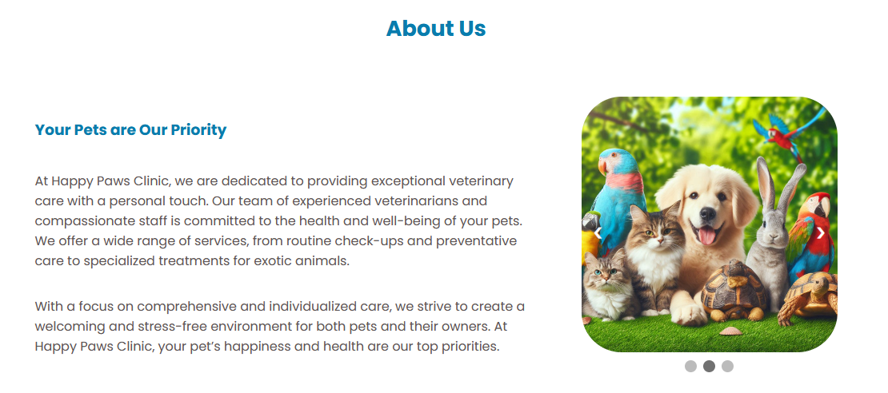
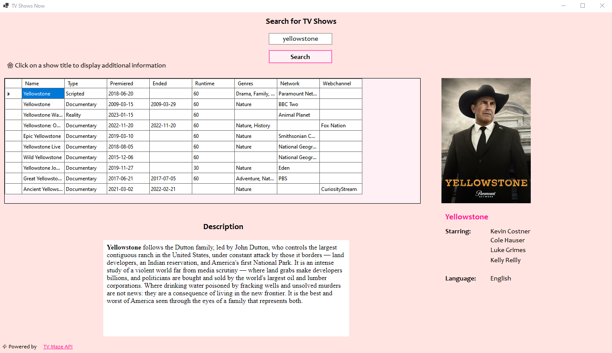

Etusivu 🌸 Harrastukset 🌸Portfolio

Olen aina ollut kiinnostunut ja innokas tietokoneiden harrastaja ja keväällä 2024 valmistuin tieto- ja viestintätekniikan ohjelmistokehittäjäksi ammattikoulusta. Insinööriopinnoissani aion suuntautua sovelluskehityksen puolelle, koska kiinnostuin siitä kovasti jo ohjelmistokehittäjän opintojen aikana.
Alla joitakin työnäytteitäni, käy Githubissani ja tutustu niihin tarkemmin!
Yksinkertainen, kuvitteellinen eläinklinikan sivusto.
Kielet: HTML, CSS, Javascript
Tästä sivustoon!
|  |  |  |
Olen ohjelmistokehittäjän perustutkinnon aikana tehnyt Windows Forms-sovelluksen C#-kielellä, jonka avulla käyttäjä voi hakea tv-sarjan nimen perusteella tietoja sarjoista ja niiden näyttelijöistä.
Kielet: C#
Tästä Githubiini!
